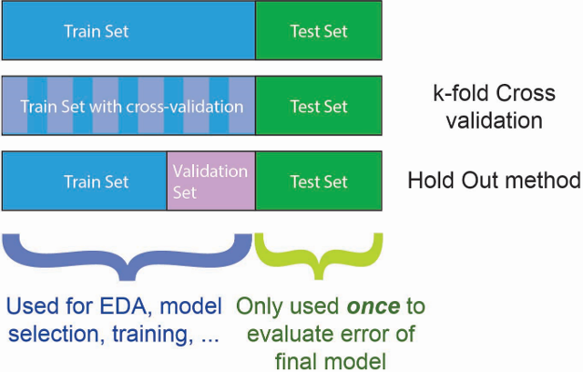
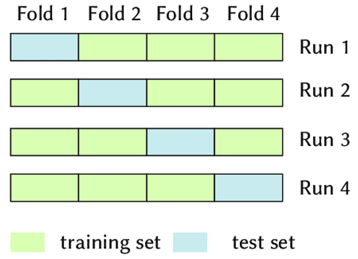

Validation#
import numpy as np
import pandas as pd
from sklearn.model_selection import train_test_split, cross_validate, cross_val_score
from sklearn.impute import SimpleImputer
from sklearn.preprocessing import OneHotEncoder
from sklearn.linear_model import LinearRegression
Train-validation-test sets#
ที่ผ่านมา เราได้เรียนวิธีการแบ่ง dataset ออกเป็น training set กับ test set แต่ในความเป็นจริงเราไม่ทำแบบนั้น
ขณะที่เรากำลังสร้าง model เราต้องทำการตัดสินใจหลายอย่าง เช่น เลือกชนิดของ model กำหนดค่าของ hyperparameter และ/หรือ เลือก feature ที่จะใช้หรือเอาออก เราไม่ควรใช้ test set ในการทดสอบ (validation) model แต่ละแบบ เพราะจะทำให้ model เรียนรู้ข้อมูลใน test set ทั้ง ๆ ที่กำลังอยู่ในกระบวนการ training เราควรแบ่งข้อมูลจาก training set ส่วนหนึ่งมาเป็น validation set แล้วใช้มันในการทดสอบ model แทน
เราสามารถทำ validation ได้โดยใช้ validation set ที่แบ่งออกมาจาก training set แล้ว หรือทำ cross-validation ก็ได้

Cross validation#
K-fold cross-validation เป็นการแบ่ง training set ออกเป็น K ชุด เลือกใช้ข้อมูล 1 ชุดเป็น validation set และใช้ข้อมูลที่เหลือในการเทรน การเลือก training set และ validation set ที่ต่างกันจะได้ sub-model ที่ต่างกัน เอา performance ที่ประเมินได้จากแต่ละ sub-model มาเฉลี่ย ได้สิ่งที่เรียกว่า cross-validated score ของ model นั้น
หากใช้ K มาก จะทำให้การประเมิน performance มีความน่าเชื่อถือ แต่ก็ทำให้ computational cost สูงตามไปด้วย
K = 5-10 กำลังดี
ไม่ต้องเอา model ไป train (
.fit) ก่อนใช้
sklearn.model_selection.cross_validateหรือsklearn.model_selection.cross_val_score(หากต้องการแค่ score)
4-fold cross-validation มีลักษณะดังภาพด้านล่าง

# Perform data pre-processing - we need only numerical features to perform linear regression
# Import data and drop duplicate
data = pd.read_csv("../data/India_air_quality.csv").drop_duplicates()
# Separate features (X) and target (y)
X, y = data.drop(columns="rspm"), data['rspm']
# Drop row containing non-sense values
X = X.drop(X[(X['no2'] < 0) | (X['rainfall'] < 0)].index)
y = y[X.index]
# Drop features with missing values >30%
X = X.drop(columns=["stn_code", "spm", "pm2_5"])
# Replace missing values in numerical columns with their means
num_cols = X.select_dtypes(include=np.number).columns
X[num_cols] = SimpleImputer(strategy="mean").fit_transform(X[num_cols])
# Train-test split
X_train, X_test, y_train, y_test = train_test_split(X, y, train_size=0.7, random_state=42)
# We need only numerical features to perform linear regression
X_train, X_test = X_train[["so2", "no2", "rainfall"]], X_test[["so2", "no2", "rainfall"]]
# 5-Fold cross-validation
cv_results = cross_validate(LinearRegression(), X_train, y_train, cv=5)
cv_results
{'fit_time': array([0.01455545, 0.01439214, 0.01384401, 0.01351833, 0.0131135 ]),
'score_time': array([0.00299788, 0.00276685, 0.00280619, 0.00299811, 0.00251198]),
'test_score': array([0.12877116, 0.11314677, 0.1259242 , 0.1296588 , 0.13311436])}
# 5-Fold cross-validation (only see scores)
cv_scores = cross_val_score(LinearRegression(), X_train, y_train, cv=5)
cv_scores
array([0.12877116, 0.11314677, 0.1259242 , 0.1296588 , 0.13311436])
# Print the mean score
cv_scores.mean()
0.1261230571914333